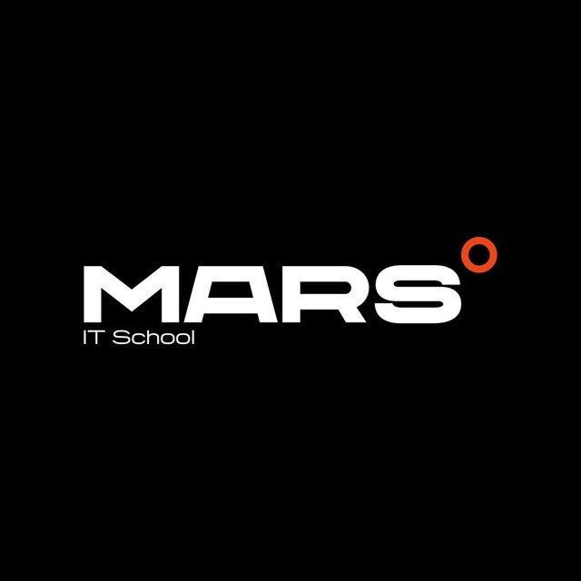

My name is Umid I live in tashkent with my parents IM 18 year old . I study at school this year I am going to geaduate also I have extra lessons its it and math
Thank you for your atention
Sayohatchilar uchun qolanma
Bu sayohat qollanmalari sizga sayohat uchun yordam beradi.
Sayohat uchun kerak boladigan buyumlar
suv- chanqaganda ichish uchun
compas-yolda yoqolib qolmaslik uchun
arqon-tepaliklarga chiqish uchun
telefon , noutbook- yordam kerak bolsa chaqirish uchun
Sayohat qoidalari
har bir sayohatchi bu qoidalarga amal qilishi kerak
Pasport va vizalar: Sayohat qilishdan oldin, pasportingizni tekshirib ko'ring va kerakli vizalarni olishni unutmang. Ba'zi mamlakatlar vizasiz sayohat qilish imkoniyatini beradi, lekin bunday holatlarni oldindan bilib olish kerak.
Sog'liqni saqlash: Sayohat qilishdan oldin, kerakli emlashlarni olishni va sog'liqni saqlash sug'urtasini qilishni tavsiya etiladi. Ko'pgina davlatlar ma'lum emlashlarni talab qilishi mumkin
Moliyaviy xavfsizlik: Pulni turli joylarda saqlashni o'ylab ko'ring (masalan, naqd pul va bank kartalarini ajratib saqlash). Sayohat qilishda kredit yoki debet kartalaridan foydalanish xavfsizroq bo'lishi mumkin, lekin naqd pulni ham o'zingiz bilan olib yurish muhim.
Trafik qoidalari: Agar siz mashina yoki mototsikl ijaraga olishni rejalashtirayotgan bo'lsangiz, mahalliy trafik qoidalarini bilib oling. Ayrim davlatlarda, masalan, Yevropa va Osiyoning ayrim qismlarida, avtomobilni boshqa tomonida haydash talab qilinadi.
Virtual Sayohat
Keling, virtual sayohatga chiqamiz va dunyoni turli qisimlarini kashf qilamiz! Bu sarguzasht sizni hayajonga soladi.
Dunyoning Mojaz Sehrli Joylari
Kashf etish uchun uchta ajoyib joyni tanladik
,Parij - Fransiyaning ramzi va dunyoning eng mashhur diqqatga sazovor joylaridan biri.
,Los-Anjels- Amerika kino sanoatining ramzi
,Tokiyo- Yaponiyaning ajoyib shahar manzaralari.
Qizizqarli Video Sayohatlar
Endi esa , dunyoning turli burchaklaridagi qiziqarli video sayohatlarni tomosha qilaylik:
Uzbekistondagi katta It kompaniya haqida qisqacha

Mars IT school, Ozbekistondagi bolalar talim muasasalari orasida yetakchi oquv markazi